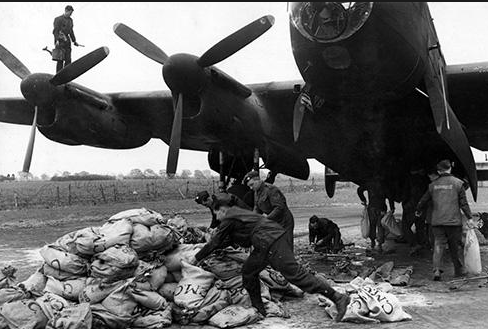
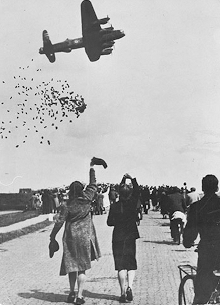

Kenneth E. Davey remembers a little-known operation at the end of the war.
On the 26 April 1945 nobody knew that the war was to end 15 days later. RAF Squadron 186, based at Stradishall near Cambridge was given the task of dropping food to the Dutch who were dying of hunger. The Germans must have been aware that the end was near and had, through the Red Cross, agreed to allow planes to drop food in a "window" of one hour on 28 April.
Paris Branch
Members' stories
The Air Ministry had calculated that 350
Lancasters could participate which meant they would pass at the rate of
six per minute - weather permitting! We discussed at length the best way
to go about it - drop from what height and how to pack the goods - spam,
corned beef, potatoes, flour, dried vegetables etc. There was, of course,
no question of parachutes and we didn't even have enough bags to put the
stuff in. 
On the 27th we carried out tests with 25Kg
bags dropped from 1000 feet. The sacks burst, the potatoes arrived mashed,
the flour bags exploded like smoke bombs and the tougher items were distributed
all over the landscape. Subsequent tests at 900, 800, then 600 feet made
little difference. At 500 feet, however, which for a Lancaster was skimming
the treetops the potatoes landed unmashed and if we put them in two sacks,
one inside the other, only the interior sack burst. The problem was partly
solved by the armourers who adapted incendiary bomb containers which could
carry 1250 lbs. of supplies in the bomb bays but much more could be carried
if sacks were also loaded into the fuselage to be heaved out of the door
by the crew members. Where on earth, however, could we get thousands of
sacks at 24 hours' notice? After some thought the Group Captain pointed
out that the only place likely to be oversupplied in sacks, as for so
much else, was likely to be the nearby US base. 
An approach was duly made and the US Colonel was sympathetic and admitted to having in fact, vast quantities of sacks which he would be delighted to hand over - as soon as he had authority. Such an unusual request would probably have to go to the Pentagon in an infinite series of small steps before being agreed to and the chances of getting it in 24 hours - zero. There was a silence, then, "Of course", the Colonel added, "Petty theft is a big problem and there aren't enough MPs to guard everything. Especially when the hangar isn't locked and the MPs are all on the other side of the base as they will be this evening. I don't suppose anything would be noticed until at least 20 minutes after the last sack left."
A nod is as good as a wink, hands were shaken and there followed a very busy evening. 1500 heavy sandbags went unexpectedly missing that night. The local police were around at our base the next morning. The Chief Inspector went through the motions. "Americans seem to have lost a few bags. Don't suppose you chaps know anything about it? No? Well, I'll just note that for the record." He closed his notebook and was taken off for a gin and tonic in the Officers' Mess. Over a drink it was soon clear that the affair held little mystery for him but he was a man who knew real priorities when he saw them.
The mission, originally planned for the next day, was delayed for 24 hours by the Germans which gave us a little extra time to do the packing. The flight to Rotterdam was made at 1000 feet, the ceiling being lower than forecast. Ten minutes from the city we had to come down even lower and we found ourselves surrounded by dozens of planes, all headed towards the same objective. In the crowd some delicate adjustments to motors 1 and 4 had to be made and the Rolls Royce Merlins didn't like being messed about with and not a few props had to be feathered. Later, back at Stradishall, the mechanics were most put out at the treatment we had been giving them. They had to work all night to get them back into operation for the next day. Some of the pilots weren't very happy either - several planes came back with bullet holes in them in spite of the promised cease-fire. They were only bullet holes though, there was no ack-ack.
The scene on Rotterdam racecourse, the designated dropping zone, was extraordinary. Hundreds of planes were packed into the approach and you could see people scurrying about grabbing supplies while more was still dropping - this in spite of strict instructions to the contrary by the Dutch police. We learned later that several of these queue-jumpers were killed by falling sacks.
After the drop we flew over the city at 300 feet where the four-storey buildings and flat roofs were covered with orange flags and thousands of cheering people. Infected with their obvious enthusiasm we dropped to 200 feet along the wide avenues and really gave them something to look at.
There were another 3 or 4 operations of like nature between then and the end of the war, at Rotterdam again and also The Hague. Although what we could do was obviously very little in the face of so much need, the Dutch were very grateful and in 1970, I was invited to London with other RAF officers who had participated in Operation Manna by the Dutch ambassador to commemorate the 25th anniversary of the event, (I had left the RAF in 1962 after 20 years service and was settled in Paris). During the speeches at the embassy we learned that in Holland, in 1945, 1000 people a day were dying of starvation. Each officer received a decoration and a print of the one and only photograph taken of the operation from the ground that day. I have since had the opportunity to learn much more of the terrible hardship endured by the people of that brave country during the long years of occupation and it is a source of great satisfaction to have participated a little in this effort to relieve their distress.
Ken Davey